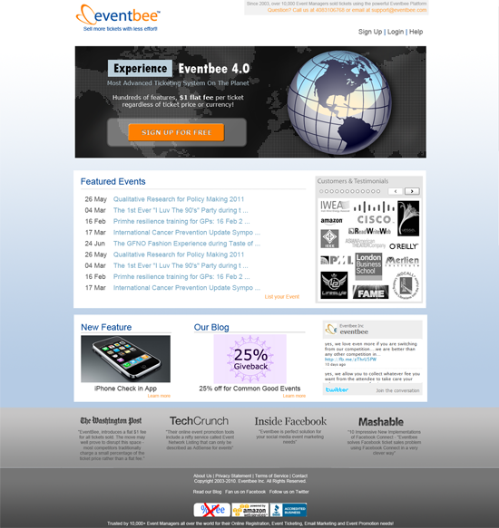

Website Redesign for Eventbee.com
Goals of Redesign
The site not only had a bad color scheme and design going on with the strong white to orange gradient and blue round corner widgets, but the UX was also unclear and non-convientional.
I wanted to:
- Clean up the color scheme
- Have a cleaner layout
- Have action items bold, clear, and in the right areas
This is what I came up with:

Rotating Banners
Here are the banners I made to match the new site design, and inform users of new features (not actual size):